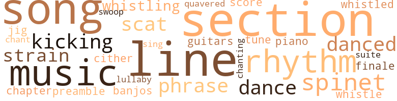
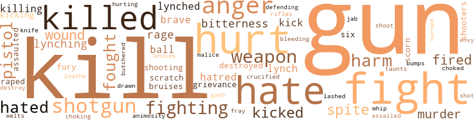

God is for White Folks, by Thomas, Will (1947)
63 music-related terms matched in this text.
Most frequent terms in this topic: section (7); song (6); line (4); music (4); rhythm (3)
banjo.n.01
Definition: a stringed instrument of the guitar family that has long neck and circular body
| word | sentence |
|---|---|
| banjos | Sometimes , in fine weather , a small fire would be built in the clearing , and the people would come out or sit on their front steps listening to the guitars and the banjos . |
chant.n.01
Definition: a repetitive song in which as many syllables as necessary are assigned to a single tone
| word | sentence |
|---|---|
| chant | Vaguely she understood that at last she had left the terrible chant somewhere behind . |
chapter.n.01
Definition: a subdivision of a written work; usually numbered and titled
| word | sentence |
|---|---|
| chapter | " Lesson two , chapter six , Bartolomew 's Lectures for Men of Color . " |
dance.n.01
Definition: an artistic form of nonverbal communication
| word | sentence |
|---|---|
| dance | His heart was only now slowing its mad juba dance . |
dance.v.03
Definition: skip, leap, or move up and down or sideways
| word | sentence |
|---|---|
| dance | His tight grip made Hank dance with pain . |
| danced | The animal reared and danced into the street , and the sudden motion and clatter of hoofs broke the spell . |
| danced | The jumbled confusion of sound began to blend into a sullen roar , a single , deeper , more purposeful roar , and on top of the roar high , piercing screams danced briefly , shrilling rebel yells calling the loyal to the fray . |
finale.n.01
Definition: the closing section of a musical composition
| word | sentence |
|---|---|
| finale | The finale had begun . |
guitar.n.01
Definition: a stringed instrument usually having six strings; played by strumming or plucking
| word | sentence |
|---|---|
| guitars | Sometimes , in fine weather , a small fire would be built in the clearing , and the people would come out or sit on their front steps listening to the guitars and the banjos . |
jig.n.01
Definition: music in three-four time for dancing a jig
| word | sentence |
|---|---|
| jig | Herbert , who was still dodging his Aunt Jenny , had been letting off some funny talk about Beauchamp being a Sam , a steelhead , a jig . |
kick.v.04
Definition: kick a leg up
| word | sentence |
|---|---|
| kicking | She landed on Herbert , a snarling , screaming , scratching , kicking , biting black panther , who rode him down into the dust and sat astride him , beating on his head with the heel of her shoe . |
| kicking | Beau moved warily almost to the water 's edge , kicking cautiously now and then through the grass until his toe hit the side of the hidden pirogue , and Mike helped him drag it to a sandy spit which extended like a pale finger into the river . |
lullaby.n.01
Definition: a quiet song intended to lull a child to sleep
| word | sentence |
|---|---|
| lullaby | To Ellen Beauchamp , it was a soothing lullaby dimly heard in the dream world where Marthe 's potions had wafted her . |
music.n.01
Definition: an artistic form of auditory communication incorporating instrumental or vocal tones in a structured and continuous manner
| word | sentence |
|---|---|
| music | Muted strains of music and sometimes a snatch of song could be heard , but most of the people just sat around in their cabins and hashed over the fight between Jeeter and Beau . |
| music | Once or twice she halted by the piano and played a few bars of music . |
| music | Then Lige returned to a delightful land of music and color and strange , exciting scenes . |
| music | He discovered that the furniture was thick with dust , and as he wiped an exploratory finger across the top of the old spinet in the music room , Alary spoke behind him . |
phrase.n.02
Definition: a short musical passage
| word | sentence |
|---|---|
| phrase | " Just a phrase . |
| phrase | Each time it seemed to repeat the same phrase : Drink this , white Miss . |
piano.n.01
Definition: a keyboard instrument that is played by depressing keys that cause hammers to strike tuned strings and produce sounds
| word | sentence |
|---|---|
| piano | Once or twice she halted by the piano and played a few bars of music . |
preamble.n.01
Definition: a preliminary introduction to a statute or constitution (usually explaining its purpose)
| word | sentence |
|---|---|
| preamble | " The chief says you got love troubles , " Mike began without preamble . |
rhythm.n.04
Definition: the arrangement of spoken words alternating stressed and unstressed elements
| word | sentence |
|---|---|
| rhythm | The hoofbeats grew louder , and he realized with sinking heart that their solid rhythm would not break and slacken . |
| rhythm | " But sometimes ... I ca n't seem ... to remember . . . " The halting words trailed off , and Beau lowered himself silently into the chair beside the bed and sat unmoving until the rhythm of his father 's breathing assured him that he was sleeping peacefully . |
| rhythm | The plump little bay settled into a run , and Beau leaned forward , yielding happily to the solid rhythm . |
scat.n.01
Definition: singing jazz; the singer substitutes nonsense syllables for the words of the song and tries to sound like a musical instrument
| word | sentence |
|---|---|
| scat | Flamingo was the parish scat and trading center . |
| scat | Now , scat . " |
score.n.02
Definition: a written form of a musical composition; parts for different instruments appear on separate staves on large pages
| word | sentence |
|---|---|
| score | What 's the score , Beau ? " |
section.n.01
Definition: a self-contained part of a larger composition (written or musical)
| word | sentence |
|---|---|
| section | Flamingo 's business section , Beau discovered , was no great shakes . |
| section | Beau made a complete circle through the business section and found himself again on the main street . |
| section | A Jot of the townfolk went home and stayed , but the coun - try people filled the business section . |
| section | AFTER THE KLAN MEETING BROKE UP , GAYNOR Brackens rode aimlessly along the back roads that honeycombed the section . |
| section | " Especially in the light of what you and friend Brackens have in mind for that section . |
| section | But in one Swamptown structure the people were not whis - pering , and that was in the little church at the far edge of the section . |
| section | The whole business section blazed with light and bulged with wagons , buggies , horses , mules , and yelping , ex - cited humans and dogs . |
sing.v.02
Definition: produce tones with the voice
| word | sentence |
|---|---|
| sing | A rich , husky voice began to sing a Creole love song . |
song.n.01
Definition: a short musical composition with words
| word | sentence |
|---|---|
| song | Muted strains of music and sometimes a snatch of song could be heard , but most of the people just sat around in their cabins and hashed over the fight between Jeeter and Beau . |
| song | Gramophones ground out song hits : " I Wonder Who 's Kiss - ing Her Now ? " and " Rufus Rastus Johnson Brown , " which drew continuous guffaws from the sidewalk listeners . |
| song | THE BELLS OF FLAMINGO 'S CHURCHES JOINED TO peal their slow , sadly sweet song that the Christian folk might know God 's temples were open and waiting on this lovely Sabbath morning . |
| song | A rich , husky voice began to sing a Creole love song . |
| song | Ellen 's face twisted painfully , and when the song was done , she buried her face in the coverlet , shuddering at the sound of laughter and applause . |
| song | In place of the brooding quiet , so long a part of the planta - tion , there were now bursts of laughter and strains of song . |
spinet.n.02
Definition: early model harpsichord with only one string per note
| word | sentence |
|---|---|
| spinet | He discovered that the furniture was thick with dust , and as he wiped an exploratory finger across the top of the old spinet in the music room , Alary spoke behind him . |
| spinet | From below , the tinkling of the old spinet floated into the room . |
| spinet | Wearily , Bartolomew walked through the high-ceilinged rooms , conscious of the outmoded , faded elegance they con - tained : French mirrors , carved marble tables , chairs and sofas of damask and plush , crystal chandeliers , tapestry wall panels , a spinet and a square grand , and in a far , dark comer , a harp with broken strings . |
suite.n.01
Definition: a musical composition of several movements only loosely connected
| word | sentence |
|---|---|
| suite | " Your father was born in that suite , " Marthe said , as though she read his thought . |
swoop.n.01
Definition: (music) rapid sliding up or down the musical scale
| word | sentence |
|---|---|
| swoop | He had his father 's broad brow , wide - set eyes , and the same hawkish swoop to his nose . |
tone.v.01
Definition: utter monotonously and repetitively and rhythmically
| word | sentence |
|---|---|
| chanting | Simon strode proudly among them , a triumphant warrior , chanting praises of his King , Who had at last leaned down from His golden throne to bring about such miracles as their own eyes had seen : Beau brought back and given his rightful sonship ; Mist ' Phil , stricken nigh to the grave , led back to life and health ; po ' Miss Elbe , freed of th ' devil 's grip . |
tune.n.01
Definition: a succession of notes forming a distinctive sequence
| word | sentence |
|---|---|
| line | I hoped you would be his heir , and even continue his line . |
| line | Have to do it every once in a while to keep them in line . |
| lines | But even before he started , his rugged black face would set in hard lines , and not until he returned from the muddy river town could he relax either his face or his feelings . |
| line | Me looked the documents over thoroughly , read - ing them line by line , his red , cherubic mouth forming the words silently . |
| line | Me looked the documents over thoroughly , read - ing them line by line , his red , cherubic mouth forming the words silently . |
| tune | But when I got tuh tellin ' him what happened , he changed his tune . " |
| strain | Like many unprincipled men , Brackens had a strong strain of sentimentality in his nature which he lavished on his son . |
| lines | The driver , hunched over his lines , the workers discounted as mere white trash . |
| lines | Beau rode into the midst of the group , and surrounded by the choppers , he looked out over the clean rows between the long lines of cotton plants . |
| strains | In place of the brooding quiet , so long a part of the planta - tion , there were now bursts of laughter and strains of song . |
warble.v.01
Definition: sing or play with trills, alternating with the half note above or below
| word | sentence |
|---|---|
| quavered | " I am very tired , Ellen , " quavered a voice within the room . |
whistle.v.01
Definition: make whistling sounds
| word | sentence |
|---|---|
| whistle | When one did , every idler within hearing of its whistle met at the river front . |
| whistled | Bartolomew whistled . |
| whistling | Lige dragged in the last of his setlines , whistling low as he did it . |
| whistling | But just beyond the wood he reined his horse to a sudden halt when he saw Mike , bareheaded , sauntering along and whistling blithely . |
zither.n.01
Definition: a musical stringed instrument with strings stretched over a flat sounding board; it is laid flat and played with a plectrum and with fingers
| word | sentence |
|---|---|
| cither | And he do n't want cither to happen . |
350 violence-related terms matched in this text.
Most frequent terms in this topic: gun (33); kill (26); fight (25); hurt (24); hate (17)
abhor.v.01
Definition: find repugnant
| word | sentence |
|---|---|
| loathe | I loathe you . " |
abrasion.n.01
Definition: an abraded area where the skin is torn or worn off
| word | sentence |
|---|---|
| scratch | " Y' awl git out dull way ' fore dis white man 's bastard scratch my eyes out ! " |
| scratch | He got a scratch er two here and there , that 's all . " |
affray.n.02
Definition: a noisy fight
| word | sentence |
|---|---|
| fray | The jumbled confusion of sound began to blend into a sullen roar , a single , deeper , more purposeful roar , and on top of the roar high , piercing screams danced briefly , shrilling rebel yells calling the loyal to the fray . |
anger.n.01
Definition: a strong emotion; a feeling that is oriented toward some real or supposed grievance
| word | sentence |
|---|---|
| anger | Beau tore at Jeeter 's hands , but Jeeter , insane with anger , clenched his teeth and squeezed Beau 's neck until his face grew livid . |
| anger | " You ai n't got no right tuh put yo ' black hands on me , Tom Mason , " Sonboy said , tears of anger in his eyes . |
| anger | She slapped it away in anger . |
| anger | He smouldered with anger for having made a fool of himself over a quadroon girl . |
| anger | Then she lost track of Beau , seeing only a pair of dark figures that grunted with anger as they smashed desperately at each other . |
| Anger | Anger flared in Herbert and sent him pounding recklessly after Hank . |
| anger | He was pale with anger . |
| anger | His anger was soon forgotten when his hand brushed the thick roll of money in his pocket . |
| anger | The youth had accurately de - scribed Beau , and Buck was only too ready to be convinced , for he recognized a good means of cashing in on Brackens ' anger at his son 's assailant . |
| anger | Since nothing had happened , folks soon forgot their anger at Mose and the others who had waited all night with their guns ready . |
| anger | His anger lessened when he saw that the animals had been cared for . |
| anger | There was no strength in him , but he kept trying , weakly at first , then more strongly as anger at himself began to burn in his stiff , chilled body . |
| Anger | Anger boiled up in him . |
| anger | As the seconds passed , Beau 's anger faded , and he had the look of one suddenly unsure . |
animosity.n.01
Definition: a feeling of ill will arousing active hostility
| word | sentence |
|---|---|
| animosity | He lacerated her animosity tuh a floatin ' opportunity ! |
assail.v.01
Definition: attack someone physically or emotionally
| word | sentence |
|---|---|
| assaulted | However , I think you ought to know that people are saying it was your young friend , Beau - champ , who assaulted Gaynor Brackens in a brawl over that nigger gal . " |
| assaulted | " Was Gaynor assaulted ? " |
attack.v.01
Definition: launch an attack or assault on; begin hostilities or start warfare with
| word | sentence |
|---|---|
| assailed | While they had talked , the problem of finding a life for Beau free from the color stigma did not seem difficult , but now as the Yankee wandered around the gloomy house , he was assailed by doubts . |
bleeding.n.01
Definition: the flow of blood from a ruptured blood vessel
| word | sentence |
|---|---|
| bleeding | As they entered the house , Elisse saw his bleeding face . |
bruise.n.01
Definition: an injury that doesn't break the skin but results in some discoloration
| word | sentence |
|---|---|
| bruises | They half carried the battered Jeeter into the cabin and laid him on Lulu 's bed , while the women fetched water , clean rags , ground persimmon sprouts , and dried plantain leaves for the cuts and bruises . |
| bruises | " Yes , Miss Ellen , if you mean bumps and bruises . |
bump.n.01
Definition: a lump on the body caused by a blow
| word | sentence |
|---|---|
| bumps | " Yes , Miss Ellen , if you mean bumps and bruises . |
butcher.v.01
Definition: kill (animals) usually for food consumption
| word | sentence |
|---|---|
| butchered | Something strong and defiant took hold of him and made him snarl furiously at those who now were yelling for his heart , his liver , and other parts of him , as though he were a steer about to be butchered . |
contemn.v.01
Definition: look down on with disdain
| word | sentence |
|---|---|
| scorn | " A man 's work , his religion , the color of his skin - do n't you think those are weak pegs to hang your scorn on ? " |
| scorn | In a Negro community , Elisse had told him , the women were quick to scorn her fair color , and the men inevitably tried to chase her down because of it . |
crucify.v.01
Definition: kill by nailing onto a cross
| word | sentence |
|---|---|
| crucified | That 's enough to get him crucified with - out notice if they ever find out he 's not white . " |
cut.n.05
Definition: a wound made by cutting
| word | sentence |
|---|---|
| gash | Got a gash on his hard head , that 's all . |
destroy.v.04
Definition: put (an animal) to death
| word | sentence |
|---|---|
| destroyed | The three shared a surface mood of gaiety , but it was abruptly destroyed when they turned off River Road onto the shell - paved county highway and saw a cross flaming in the center of a nearby field . |
| destroy | " Your father was afraid to show you affection for fear his sister would destroy you , as she had destroyed your mother . |
| destroyed | " Your father was afraid to show you affection for fear his sister would destroy you , as she had destroyed your mother . |
draw.v.23
Definition: pull (a person) apart with four horses tied to his extremities, so as to execute him
| word | sentence |
|---|---|
| drawn | Many times he had to restrain himself from being drawn into a group of young men of his own age . |
envy.n.01
Definition: a feeling of grudging admiration and desire to have something that is possessed by another
| word | sentence |
|---|---|
| envy | He thought of his own first love and sighed in envy . |
fight.n.05
Definition: a boxing or wrestling match
| word | sentence |
|---|---|
| fight | Muted strains of music and sometimes a snatch of song could be heard , but most of the people just sat around in their cabins and hashed over the fight between Jeeter and Beau . |
| fight | " Keep outa dis fight ! " |
| fight | A nigger fight . . . animals . . . ca n't take your eyes off them an hour . . . irresponsible . . . Mercifully the man shifted his stare to Sonboy . |
| fight | The animal , unmindful of the fight , had nibbled its way a hundred yards along the edge of the field . |
| fight | Perhaps he understood what had caused the fight , and wanted to find out if his son had been injured . |
| fight | FOR THE REST OF THE DAY , THE OLD SLAVE quarters where the workers lived hummed with talk of the fight . |
| fight | Had a fight down to the pool hall last week . |
| fight | I heered all erbout duh fight . |
| fights | And he had a lot of fights with men that just even brought up the subject . " |
| fight | Brackens and I almost had a fight in front of the bakery one day because I was looking up the street at Elisse , and there were people near enough to hear . |
| fight | " Well , ever ' body knows you broke up a fight ' twixt Gay an ' the young feller that lives with Jesse Bartolomew , " Buck said drowsily . |
| fight | " That fight an ' all las ' night just natcherally shook her up so fierce she ai n't got back to herself yit . |
| fight | He said Gay was n't hurt no worse than you could expect of a man that 's been in a knock - down , drag-out fight . |
| fights | " You know how it is when boys fights . |
| fight | Every Flamingo woman knew what the fight had been about . |
| fight | Swamptown unanimously endorsed the outcome of the gun - fight . |
| fight | Beau lay on the bunk in his cell , stunned by the shocking climax of his fight with Gay . |
| fight | " Your young lady might have been ill this afternoon when you slipped off , but the news of your fight with Brackens cured her at once . " |
| fight | I ai n't after no fight , Sol . |
| fight | The streets of Flamingo were thronged with excited men who gathered to discuss the fight between that Beauchamp fellow and Brackens ' son over Lissy Leseur . |
| fight | He musta done fight somebody , too . |
| fight | " It - it was me who started the fight , " he continued , trying to meet his father 's cold , unyielding stare . |
fight.v.02
Definition: fight against or resist strongly
| word | sentence |
|---|---|
| fight | Jeeter , who could run , swim , climb , wrestle , or fight better than any of the other young men , had for a long time taunted Beau at every chance . |
| fought | If Beau knew how she felt , maybe he 'd come to her , and he ought to know now , since she had fought for him . |
| fighting | Hearing the cries of the fighting women , Beau lurched back a few steps ; and when a shadowy figure loomed before his eyes , he struck out blindly and saw the figure sprawl and roll as it hit the ground . |
| defending | Do n't tell me you 're defending dark womanhood ? " |
| fight | That fool boy wants to fight everybody that even looks like they want to come near her . |
| fighting | Then there they was , fighting right out in the middle of the street . |
| fighting | She was tired of forever fighting men off , tired of ignoring their leers and coarse remarks , and sick of the look in their eyes when they stared meaningly at her , at her legs , her thighs , her breasts . |
| fighting | " I 'm no hero , and I 'm not fighting anybody 's race battle but my own . |
| fight | " It 's something you must fight , " answered Bartolomew . |
| fought | When the boy fell , Lige was pushed back by the excited surge of the onlookers , and though he fought with all his might to get to the bank , the crowd , not understanding his purpose , shoved him back . |
| fought | The other man gulped hard and fought for control . |
| fighting | " Brackens and this friend of yours fighting over her . |
| fighting | " Is that who he was fighting - Lulu 's boy ? |
| fighting | Setting those two handsome , wealthy boys to fighting over her . |
| fight | When they married , would they be as ready to fight over their wives as they had been over that sneaking , lying nigra seamstress ? |
| fighting | Why else would you think two wealthy , intelligent white boys would turn into fighting beasts ? |
| fighting | " I 'll not have those nigras fighting Beau . |
| fight | What 's the use of tryin ' tuh fight the white folks when you knows you 're outnumbered - when you knows the best you gon na do is get ever ' body kilt ? |
| fought | He forced his way through the fringe of the mob close to the courthouse walls and fought on around the corner . |
| fought | She like to died , and her and Mist ' Phil fought over it like cat and dog fer three days , till finally Mist ' Phil slapped her down . |
| fought | Beau rubbed the half-healed spot just below his cheekbone , and told how he and Gaynor Brackens had fought in a shack outside the river town of Flamingo . |
| fighting | " I said we Beauchamps seem to make a practice of fighting over women . " |
| fought | As he spoke , it was plain that he fought hard against the quivering of his mouth and the tremble in his voice . |
| fought | Screaming with horror , she crawled away from the edge of the bayou , while the two women fought desperately , with each movement drawing closer to the black water . |
fury.n.01
Definition: a feeling of intense anger
| word | sentence |
|---|---|
| fury | The two men , of almost equal size , stood toe to toe exchanging heavy blows , and as they smashed their fists into each other with reckless fury , excitement mounted among the onlookers . |
| rage | Cursing with rage , Sonboy grabbed up a hoe and swung it viciously at Beau , who was trying to get out from under Jeeter 's body . |
| rage | His uncle , Big Tom Mason , hurrying from the fields , met him loping down the path , his shotgun under his arm , his face sultry with rage . |
| rage | Gaynor 's tone changed ; some of the rage went out of it . |
| rage | In his buggy on the way back to town , the rage died out of Jud and was replaced by the sick feeling of shame that the subject always created . |
| fury | Staring down , he quivered with a fury more terrible than he had ever known before . |
gag.v.06
Definition: cause to retch or choke
| word | sentence |
|---|---|
| choked | Mike 's voice was choked . |
| choking | He drank until he had to stop , gasping from the choking fire , then set the jug back on the porch and stumbled to his horse . |
grudge.n.01
Definition: a resentment strong enough to justify retaliation
| word | sentence |
|---|---|
| grievance | The grievance deepest in his mind came tumbling out instead . |
| grievances | Now that his father 's recovery seemed certain , he was even ready to forgive Ellen for past grievances . |
gun.n.01
Definition: a weapon that discharges a missile at high velocity (especially from a metal tube or barrel)
| word | sentence |
|---|---|
| gun | But this nigger drawed a gun too , and they both shot each other . |
| gun | I knows who you was gwine after wid dis gun ! |
| gun | " I 've got a gun , Gaynor , " she cried . |
| gun | She went into her room and put the gun back under the mattress , then hurried to the kitchen stove and stirred the fire to life . |
| gun | They did n't make just only one gun , after all , and maybe Gay 'd get him a hide fulla lead if he tried tuh get rough . |
| gun | " But he carries a gun - " " Oh , stop worrying , honey . " |
| gun | " He 's got a gun , Beau . |
| gun | Trembling with fright , she saw Beau 's fist strike Gaynor , and in the same instant a gun flashed and roared deafeningly . |
| gun | He bent down and picked up the gun Gaynor had dropped , examined the cartridges , and slipped it into his waist band . |
| gun | " Where 's your gun ? " he asked . |
| gun | Each time he ran back into the house he paused in the living room for a quick , searching look out of the window , his hand on his gun . |
| gun | Looks tuh me like somebody knocked him loose from his gun , beat the taste outa him , and then farred a coupla shots at him . " |
| gun | Sol lifted the gun thoughtfully . |
| gun | A woman 's gun , he thought . |
| gun | While Herb made change , Gaynor flipped out the cylinder in his new gun , twirled it , triggered the hammer . |
| gun | He just loaded his gun and jammed it into his belt . |
| gun | " Still got your gun trained on us for that River Road property ? " |
| gun | Out of his hip pocket Beau drew the heavy gun Mike had given him , and he carefully put it into a bureau drawer . |
| gun | " This is Gay Brackens ' gun , " he said . |
| gun | " Would n't it be funny , Aunty , if I laid him with his own fancy gun ? " |
| gun | That 's how come you ca n't go out with a gun and killin ' in your heart . " |
| gun | He touched the gun in his belt . |
| gun | Gaynor pulled his coat back in place so that it swung loosely open , but still concealed his gun . |
| gun | They had reached a point about twenty feet apart when Sol , a gun in each hand , spoke in a low , harsh voice . |
| gun | He staggered and dropped his gun , at the same time clutching his middle . |
| gun | When the bullets had begun to fly , Sol had beaten a hasty retreat , but now as Beau stood dazedly staring at his fallen foe , his gun dangling limply , the Sheriff quickly crossed the street and knelt beside the wounded man . |
| gun | Sol stood up , turned to Beau , and took the youth 's gun from his unresisting hand . |
| gun | Gay drawed and fired three times afore that Beauchamp guy even snatched his gun out . |
| gun | Swamptown unanimously endorsed the outcome of the gun - fight . |
| gun | The scene in the street , the brief bit of action that began when Gay 's gun first flamed , re-enacted itself endlessly in Beau 's tortured mind . |
| gun | " Why , goddam you , Sol Winters , you cai n't talk tuh me like that , " Buck whined , and he dropped his hand on his gun . |
| guns | Unlike Mose and his little band , many in Swamptown were putting their faith in prayer instead of guns . |
| guns | From his steel-barred window he stared down into the surging mass of men , blazing torches , and glinting guns ; and his ears were filled with the mountainous , hungry tumult of hundreds of voices . |
| guns | Sol 's big fingers crept to his guns , touched them briefly , rubbed across the badge , and came to rest on the torn cap . |
| guns | He stood up decisively , pinned on his badge , and thrust his guns into their holsters . |
| guns | Since nothing had happened , folks soon forgot their anger at Mose and the others who had waited all night with their guns ready . |
| gun | During the day he hid in the swampy forest , feeling eyes all around him when he knew there was none , keeping his shot - gun close to his hand , sleeping restlessly at odd intervals , while his mind churned endlessly with what had happened and what yet might be . |
| gun | " Gon na get me a double-barrel scatter gun wid some a dat cash I got comin ' ! " |
harm.v.01
Definition: cause or do harm to
| word | sentence |
|---|---|
| harm | But I know the situation , and I know it would only do harm if the boy 's father ever learned his own sister had made a charge like this . |
| harm | Please , God - listen : Do n't let Your children come to harm this night . |
| harmed | " If you 've harmed my father - " " No , no , no ! " |
hate.n.01
Definition: the emotion of intense dislike; a feeling of dislike so strong that it demands action
| word | sentence |
|---|---|
| hatred | The object of his particular hatred was Beau , and Sonboy was not one to forget , even though he soon afterward left Riverbend . |
| hatred | But for him , Beau thought bitterly , for one like him who was neither black nor white , they had only hatred and contempt when he spoke . |
| hate | " You thought you were so clever , sending your nigger brat away , " Ellen went on , her voice full of hate . |
| hatred | Remembering the young loveliness of Felice and her tragic death in the bayou , Marthe experienced again a surge of hatred and a desire for revenge . |
| hate | The faint morning sun shone palely on the figures of the two women , one kneeling at the edge of the pool , the other slowly approaching , her face twisted in hate . |
hate.v.01
Definition: dislike intensely; feel antipathy or aversion towards
| word | sentence |
|---|---|
| hated | Yes , Ellen hated my niece , but after Felice died she did not seem to hate her child . |
| hate | Yes , Ellen hated my niece , but after Felice died she did not seem to hate her child . |
| hated | White men talking about black men as though they hated them . |
| hated | He knew Elisse hated whisky , but she 'd get over that after tonight . |
| hate | " I hate you , and I 'll hate you as long as I live , " Elisse an - swered . |
| hate | " I hate you , and I 'll hate you as long as I live , " Elisse an - swered . |
| hate | I 'm beginning to hate that word . " |
| hated | She had hated so many men . |
| hates | Do n't you know they 's a mess of people around here that hates your shadow ? |
| hate | " They hate you , and they hate me . |
| hate | " They hate you , and they hate me . |
| hate | They hate everybody , " Bartolomew mused . |
| hate | " As much as I hate to leave you , " Beau said slowly , " I do n't see any point in hanging around here as long as there 's any chance of trouble . |
| hates | An ' most all the men hates him worse 'n pizen . |
| hate | " They really hate me now . " |
| hate | " I suppose many white women really have reason to hate nigra women , " Elisse observed sadly . |
| hated | Elisse hated liquor , but he was n't going near her , so what did it matter ? |
| hate | That 's why they hate him . |
| hated | Once he had touched that pale , hated flesh , Herbert completely for - got his plan to get to Gaynor Brackens through the scrawny man now trembling in his grasp . |
| hates | " I think she hates me , " Felice had written in her round , child - ish hand , " and that mars the wonderful happiness I 've known here with Philip . |
| hates | Philip says the real reason she hates me is n't altogether because I 'm an octoroon , but because she is in mortal fear that he will really marry me . |
| hate | " You hate me , do n't you ? " she asked nervously . |
| hate | You must n't hate me so ! " |
| hate | You dern near ruined Gay , and they hate him . |
| hate | We must not hate each other ! " |
| hated | She hated me . |
| hated | She covered her eyes and cried hysterically , " She hated me ! |
hurt.v.04
Definition: cause damage or affect negatively
| word | sentence |
|---|---|
| hurt | Beau told himself fiercely he would not be hurt by his father 's treatment . |
injury.n.01
Definition: any physical damage to the body caused by violence or accident or fracture etc.
| word | sentence |
|---|---|
| hurt | He had become genuinely fond of Beau and felt a little hurt that the youth had not confided in him . |
| hurt | Quit dat snivlin ' and tell me how bad hurt is Jeeter ? " |
| hurt | " A man able tuh walk dat fer , he ai n't desperate hurt . |
| harm | Has he done any harm ? |
| harm | Bartolomew read from the letter , " ' We would appreciate it if you would see that no harm comes to the boy , but tell him he must re - turn home . ' " |
| hurt | With a hurt tone Jud said , " Your attitude is most uncoopera - tive , I must say , Bartolomew . |
| harm | All in all , Miss Ellie , ai n't no real harm been did . " |
| harm | " But ' mem - ber , men , if they do n't raley harm us , let 's us do n't cut down on them . |
| harm | But even if He could n't - or would n't - perhaps He might take care of Elisse and protect her from harm . |
| harm | And no harm would have come to him if he had stayed home instead of prowling through the night in his dim-witted way . |
| hurt | " Aw , hell , dull big sonabitch were n't bad hurt , " the third declared . |
| hurt | He had sensed the hurt his father felt because the place was yielding to decay and disrepair . |
| hurt | And all he got was hurt after hurt , all his life . |
| harm | You 're going to stay in this room where you ca n't do any more harm . " |
jab.n.02
Definition: a quick short straight punch
| word | sentence |
|---|---|
| jab | " Tell me what you 're jab - berin ' about ! " |
kick.v.04
Definition: kick a leg up
| word | sentence |
|---|---|
| kicking | She landed on Herbert , a snarling , screaming , scratching , kicking , biting black panther , who rode him down into the dust and sat astride him , beating on his head with the heel of her shoe . |
| kicking | Beau moved warily almost to the water 's edge , kicking cautiously now and then through the grass until his toe hit the side of the hidden pirogue , and Mike helped him drag it to a sandy spit which extended like a pale finger into the river . |
kick_back.v.02
Definition: spring back, as from a forceful thrust
| word | sentence |
|---|---|
| kicked | Jeeter groaned and rolled over , and with the same motion grabbed Beau 's ankles in his big hands and jerked him off his feet so that Beau 's back and head hit the ground hard , but Beau kicked himself free and started to scramble up . |
| kick | " When it comes to a matter of the law , I 'd kick your butt as quick as I would a nigger 's . " |
| kicked | Gaynor kicked the horse 's flanks savagely and rode away . |
| kicks | When duh white folks kicks yo ' ass for no reason ' cept 'n you got a black skin , you and duh rest ready to holler like a stuck pig . " |
| kicked | Beau kicked off his overshoes and stepped in smiling . |
| kicked | Oughta have their asses kicked , both of 'em . |
| kicked | The two sprang apart , and Beau hastily pulled Elisse inside , kicked the door shut , and took her into his arms again . |
| kick | " Open that door before I kick it down . " |
| kicked | Herbert kicked him with a resounding thump , and Hank shot forward squealing . |
| kicked | Mike kicked against the step . |
kill.v.10
Definition: cause the death of, without intention
| word | sentence |
|---|---|
| killed | So the two men met one dawn , and Beauchamp killed his rival . |
| kill | " Must I kill you to wipe that smirk off your face ? " |
| kill | " Do n't taunt me , or I 'll kill you , " she threatened . |
| Kill | " Kill duh white bastard ! " |
| Kill | Kill ' im ! " |
| Kill | " Kill duh bastard , Jeeter ! " |
| Kill | " Kill duh white bastard ! " |
| kill | They 'd had to kill a big buck nigger down Bientville way . |
| kill | Kinda let them coons know it was n't healthy to call a white man a liar , much less kill one . |
| kill | You can beat me or kill me . |
| kill | " I warn you , I 'll kill you if you try to come into this room ! " |
| kill | I 'll kill you , Gaynor ! |
| killed | One of your state legislators recently introduced a bill to make all white people prove white ancestry for three generations back , and that hill was killed so quickly it was funny . |
| killed | To share her husband with another woman was bad enough , but to find the other was a black woman - I 'll bet it almost killed her . " |
| kill | " As a matter of fact , " Mike said , " it probably did kill her . |
| kill | Brackens did n't kill that gal . |
| kill | One of these days somebody was going to kill the white bastard just like he killed Lissy . |
| killed | One of these days somebody was going to kill the white bastard just like he killed Lissy . |
| Killed | Killed that pretty girl , then set her house on fire to cover up his crime . |
| Killing | Killing that quadroon girl and burning her house down to hide it . |
| kill | They had n't found any bones in the ashes of her house , so he maybe did n't kill her , after all . |
| kill | No , the boy did n't kill her . |
| kill | And Minor knows the hoy is in a mood to kill somebody , or perhaps he killed himself . |
| killed | And Minor knows the hoy is in a mood to kill somebody , or perhaps he killed himself . |
| killed | " He might have killed the child ! " |
| killed | That he had shot a man , perhaps killed him , was too much for his dazed mind to comprehend ; and for several hours he stared blankly into space . |
| kill | He did n't want to kill anybody . |
| killed | " I - I thought I 'd killed him , Mr. Bart . " |
| killed | If I had killed Brackens - " " Or if he had killed you . " |
| killed | If I had killed Brackens - " " Or if he had killed you . " |
| killed | May have killed him , too . |
| kill | An ' ai n't no nigger gon na kill no white man and git away with it , not while I 'm around . |
| kill | We ai n't goin ' after 'em , but eff 'n they comes tuh Swamptown tuh kill an ' burn an ' rob , like they done before , well , we gon na do some killin ' too . |
| kill | White man 's gon na keep trompin ' us until we does show him we ai n't gwine be no door mat for him no more - even if he kill us . " |
| killed | Th ' big yella darky that the Sheriff was hidin ' up there in the jail killed this here white man . |
| kill | God had let them kill and burn her child like a sacrifice on the devil 's altar . |
| kill | " Oh , I know you 'd like to kill me . |
| kill | " If she ever lays a hand on my father again , " Beau vowed fiercely , " I 'll kill her ! " |
| kill | " Thank goodness , son , you did n't kill the man ! " |
| killed | " You 've almost killed my father . |
| kill | Well , I 'm glad I did n't kill him , " said Beau . |
| kill | So low that they could scarcely hear her , she whispered , " Miss Ellen tried to - kill me . |
| kill | She tried to kill me . " |
| killed | " So proud he would n't tell on Aunt Ellie , even though she - she killed my mother . " |
| kill | " I mean it does n't make sense for a lad like you to kill himself , because only cowards do that - and , as I said , you do n't look like a coward . " |
killing.n.02
Definition: the act of terminating a life
| word | sentence |
|---|---|
| killing | " Why should you or your father have to spend a lot of money to beat a killing case at law ? |
| kill | A whoop soon announced the kill . |
| killing | They knelt , whispering to God , reminding Him they had n't done anything very sinful ; asking Him to throw His mighty protection around them , because surely He knew how , any minute now , all those crazy-mad drunk white folks were liable to come ripping into Swamptown , shooting and killing and having their fun . |
knife.n.02
Definition: a weapon with a handle and blade with a sharp point
| word | sentence |
|---|---|
| knives | No , Hannah was not praying , she was mourning ; and she had been since before daybreak when the news flashed through Swamptown that her child had met a gruesome fate by clubs and bullets and knives and a rope and fire . |
| knife | Hand raised over her head , Marthe sprang down the slope and plunged her knife deep into Ellen 's breast . |
lynch.v.01
Definition: kill without legal sanction
| word | sentence |
|---|---|
| lynch | Help lynch her ? |
| lynching | The town , bursting with country folk , had its guests ready for what promised to be the most exciting lynching party ever staged in those parts . |
| lynched | " Some folks say Christ was a black man , an ' sometimes I think He musta been , 'cause I know how He musta felt when they lynched Him . |
| lynch | We 're gon na lynch that goddam nigger . |
| lynched | Yet God was greater than all those howling men , and if He willed , surely He could somehow save a man from being lynched . |
| lynch | A blue-eyed cherub of eight , cried heatedly , " Even if there are a zillion shots in him , I will make a lot more when I get big ' miff tuh lynch a nigger , I betcha . |
| lynched | " I ' member once when we lived in Gawgia , they lynched a nigger buck when I was a shaver , " he chuckled . |
lynching.n.01
Definition: putting a person to death by mob action without due process of law
| word | sentence |
|---|---|
| lynching | " There 's more ways to spoil a lynching bee than taking a hideful of lead , Sol , " he said in a low tone . |
| lynching | Quickly and completely they had faded into the darkness , stealing away swiftly from all the angry talk uptown , where a lynching was in the making , sure as God made little green apples . |
| lynching | If Beauchamp was really a black , he still did n't deserve lynching . |
malice.n.01
Definition: feeling a need to see others suffer
| word | sentence |
|---|---|
| spite | But he would n't come to her , Lucinda knew , in spite of all her longing , and the girl bowed her head and tears ran down her face . |
| spite | In spite of herself , Madame Delphine laughed . |
| spite | The liquor gave him courage and a tongue that worked in spite of Elisse 's cold , waiting look . |
| spite | In spite of herself , Elisse was impressed . |
| spite | He brought it out and , in spite of Elisse 's protest , fixed the ruby pin at her breast and slid the bracelets on her wrists . |
| spite | In spite of the rain , Flamingo 's streets were far from de - serted . |
| spite | " Bart , " he said , " I 'd like to do you a service , in spite of - er - well , never mind . |
| malice | Beau was sharply conscious of the malice in the eyes of Jeeter and Sonboy . |
murder.n.01
Definition: unlawful premeditated killing of a human being by a human being
| word | sentence |
|---|---|
| murder | " I would n't put murder and arson past Gay when he 's liquored up . " |
| murder | Only a fool would risk bumping into a man who wore murder so obviously on his face and a big black pistol just as obviously in his belt . |
| murder | Fust off , he was rarin ' fer me to charge this boy with attempted murder . |
| murder | But I 'll never let it drag me so close to murder again , you can bet . " |
| murder | She tried to murder me ! |
musket_ball.n.01
Definition: a solid projectile that is shot by a musket
| word | sentence |
|---|---|
| ball | But soon a tiny blue ball of flame flared up and began to spread hungrily . |
| ball | Doc Summers said if that ball 'd been an inch lower , it 'd be " twenty-three skidoo " for ole Gay . |
| ball | Den I gon na go tuh town and have myself a pyore black ball ! " |
open_fire.v.01
Definition: start firing a weapon
| word | sentence |
|---|---|
| fired | From close by came the ear-splitting sound of two shots fired in quick succession , and Beau dropped down again , won - dering how Gaynor had found his weapon . |
| fired | " When I fired those shots , he flew down the road toward Swamptown , and his horse took out after him . " |
| fired | At the sudden command , Beau stopped and glanced toward the voice , and in that instant Gaynor drew and fired twice . |
| fired | Then some - how Beau 's revolver was in his hand , and he fired . |
| fired | Gay drawed and fired three times afore that Beauchamp guy even snatched his gun out . |
| fired | Those drunken fools have fired my mill . |
pain.v.02
Definition: cause emotional anguish or make miserable
| word | sentence |
|---|---|
| hurt | " Does nothing hurt you , you beast ? " she cried . |
| hurt | Oh , Beau - " Intent on his driving , Beau said gruffly , " Nobody 's going to hurt you . |
| hurt | " If I let you in - will you promise not to hurt me ? " |
| hurt | " Aw , you know I ai n't gon na hurt you if there ai n't any - body in there with you , " Gaynor said less roughly . |
| hurt | She were n't hurt were she , Mr. Winters ? " |
| hurt | I mean he ai n't hurt bad . |
| hurt | " I did n't know she was hurt , " Bartolomew said anxiously . |
| hurt | He said Gay was n't hurt no worse than you could expect of a man that 's been in a knock - down , drag-out fight . |
| hurt | He ai n't hurt bad , though . |
| hurt | " Simon said he was n't badly hurt . |
| hurt | " Man , do n't hurt yo ' foot . " |
| hurt | All I got ta see now is Doc 's report that Gay ai n't hurt serious , and I can turn him loose . " |
| hurt | Nobody had been hurt except poor Hannah 's little boy , Lige . |
| hurt | Beau guided his horse between the long cotton rows , careful that none of the plants was hurt by the mare 's hoofs . |
| hurt | And all he got was hurt after hurt , all his life . |
| hurting | Please , you 're hurting me . " |
| hurt | She was hurt that he found no comfort in her . |
pistol.n.01
Definition: a firearm that is held and fired with one hand
| word | sentence |
|---|---|
| pistol | Then , expecting Gaynor , she had carried her small pistol in the folds of her dressing gown . |
| pistol | He carried a pistol to make it stick . |
| pistol | Yet if she 'd got herself a man - any man - Gaynor 'd be popping that big pistol of his at somebody , not getting blind drunk on the gal 's front porch . |
| pistol | Only a fool would risk bumping into a man who wore murder so obviously on his face and a big black pistol just as obviously in his belt . |
| pistols | As the Sheriff sauntered across the street , his hands were close to the holstered pistols at his sides . |
| pistol | Yes , sir , took one swing and smacked Gay down , then took his big black pistol like takin ' candy from a teenincey baby . |
| pistols | " Perhaps I 'm a fool , " Bartolomew said quietly , " but it seems to me if you stand by and let a mob string up another human being , it 's just the same as if you took out one of your pistols and shot him down yourself . " |
| pistol | What were a few wild pistol shots , galloping horses , or drunken Klansmen ripping through town ? |
rape.v.01
Definition: force (someone) to have sex against their will
| word | sentence |
|---|---|
| raped | And then , by God , that goddam nigger raped this gal that was with the white man . |
| Raped | Raped her four times ' fore he turned her loose . |
resentment.n.01
Definition: a feeling of deep and bitter anger and ill-will
| word | sentence |
|---|---|
| bitterness | With bitterness in his heart , Beau turned and walked toward his horse . |
| bitterness | " How could they be ? " she asked , an undertone of bitterness giving a sharp edge to her voice . |
| bitterness | But she had written that letter - It came again , low and shaking with bitterness . |
| bitterness | " My father ! " said Beau with bitterness . |
revolver.n.01
Definition: a pistol with a revolving cylinder (usually having six chambers for bullets)
| word | sentence |
|---|---|
| six-shooters | It do n't make him no difference , knuckles or six-shooters , he 's nine dollars wuth a hell on wheels . |
| six-shooters | They said yes , enthusiastically , and yes , they all had their riding horses , and yes , they all had six-shooters . |
rifle.n.01
Definition: a shoulder firearm with a long barrel and a rifled bore
| word | sentence |
|---|---|
| rifles | Lotta them got shotguns and rifles . |
shoot.v.02
Definition: kill by firing a missile
| word | sentence |
|---|---|
| shot | That he had shot a man , perhaps killed him , was too much for his dazed mind to comprehend ; and for several hours he stared blankly into space . |
| shoot | Well , they mought shoot me down like a man , but I be goddamned if they gon na run over me , er string me up this night . " |
shooting.n.02
Definition: killing someone by gunfire
| word | sentence |
|---|---|
| shooting | But the salesman had to grab the wheel or Gay 'd have busted into the Confederate monument , sure as shooting . |
| shooting | They knelt , whispering to God , reminding Him they had n't done anything very sinful ; asking Him to throw His mighty protection around them , because surely He knew how , any minute now , all those crazy-mad drunk white folks were liable to come ripping into Swamptown , shooting and killing and having their fun . |
shotgun.n.01
Definition: firearm that is a double-barreled smoothbore shoulder weapon for firing shot at short ranges
| word | sentence |
|---|---|
| shotgun | They bought cloth and salt and matches in big paper boxes , side-meat and white sugar , nails and harness , plough - shares and Black Draught , shotgun shells and shoes and axle grease . |
| shotgun | His uncle , Big Tom Mason , hurrying from the fields , met him loping down the path , his shotgun under his arm , his face sultry with rage . |
| shotgun | Sonboy glared and tried again to pull away , but Tom swung him around and smacked him so hard that he dropped the shotgun . |
| shotgun | And did you go puttin ' a shotgun blast in Beau , dat white man 'd have you hung up in a tree so fas ' you 'd think duh tree des ' reached out and grabbed you . |
| shotgun | " I 'd like to turn a shotgun loose on 'em , " Beau growled . |
| shotgun | " I 've got a shotgun , if you want to try it , son . |
| shotgun | Well , Mose swears and bedams he 's gwine blow Gay 's head plumb off his shoulders with that big double-barreled shotgun of his ' n , on account of Gay bigged his youngest gal , Ida Belle . |
| shotguns | Lotta them got shotguns and rifles . |
| shotguns | Mose Lefevre was there , and so were twenty-five or thirty other men , most of them carrying shotguns in their hands and revolvers in their belts . |
| shotgun | Bartolomew drove with reckless skill ; as they skidded onto the road out of town , Beau threw a glance behind and only then discovered that Mike , shotgun held ready , was in the seat behind . |
| shotgun | " Take this shotgun , " Mike said gruffly . |
| shotgun | If the Klan rags do n't work , the shotgun will . " |
| shotgun | He took the shotgun from Mike and laid it beside him , then lifted his paddle . |
twit.n.02
Definition: aggravation by deriding or mocking or criticizing
| word | sentence |
|---|---|
| taunts | However , Jeeter 's game had turned into something serious when his friends joined in and added their taunts . |
wale.n.01
Definition: a raised mark on the skin (as produced by the blow of a whip); characteristic of many allergic reactions
| word | sentence |
|---|---|
| welts | Beauchamp , his face a mass of welts and blood , stood confronted by his sister . |
weapon.n.01
Definition: any instrument or instrumentality used in fighting or hunting
| word | sentence |
|---|---|
| weapon | Despairingly , he flung out his hands and raked the ground , seeking a rock , a stick , any kind of weapon . |
| weapon | Tom picked up the weapon , broke it at the breech , and withdrew the two big cartridges . |
| weapon | It was the only weapon she had against Gaynor , and even it was not very effective . |
| weapon | He dropped the heavy weapon on Beau 's lap . |
| weapon | From close by came the ear-splitting sound of two shots fired in quick succession , and Beau dropped down again , won - dering how Gaynor had found his weapon . |
| weapon | Sol looked at the little weapon carefully . |
| weapon | Gaynor 's weapon exploded again , this time at the ground . |
| weapon | Know whose weapon laid that big peckerwood down ? |
| weapon | He shrank again beneath his panic when Gay was shooting at him ; and again his mind reeled with the same sense of shocked unbelief that came over him when his own weapon suddenly thundered and Gaynor began to crumple . |
| weapon | " After all , it was Gaynor who attacked you - with a deadly weapon . |
| weapons | Men screamed and yelled , brandishing their weapons as if they were about to join battle with some mighty host . |
weather.v.01
Definition: face and withstand with courage
| word | sentence |
|---|---|
| brave | How come brave man like you let a little-bitty ole black gal make you holler calf-rope ? " |
| brave | Well - I guess I 'm not brave enough to try forcing new paths , and besides I do n't know how . |
| brave | The liquor made him feel strong and brave . |
whip.v.04
Definition: strike as if by whipping
| word | sentence |
|---|---|
| lashed | The animal reared , and the man lashed its rump until the hoofs hit the ground and took off in a thundering run . |
worst.v.01
Definition: defeat thoroughly
| word | sentence |
|---|---|
| whip | Ellen raised her whip and cried viciously , " I 'll whip you , then , nigger . |
wound.n.01
Definition: an injury to living tissue (especially an injury involving a cut or break in the skin)
| word | sentence |
|---|---|
| wound | His nose and mouth were mangled , one eye was swollen shut , and there was a gaping wound on the side of his head . |
| wound | Others hurried to hunt spider webs to pack the head wound . |
| wounds | The wounds he had borne from Riverbend were far from healed , and he had avoided anything that might reopen them . |
| Wounds | " Wounds of the body are not always the worst , " Marthe re - plied coldly . |
| wound | " Doc told Bart Gaynor 's wound was n't serious . |
| wounds | The island had been Beau 's refuge , a solitary retreat where he had gone with his youthful wounds , and now when he could not hide his shattered feelings , he went to the island again . |
134 religion-related terms matched in this text.
Most frequent terms in this topic: God (63); Catholic (9); church (7); faith (7); prayer (5)
baptize.v.01
Definition: administer baptism to
| word | sentence |
|---|---|
| christened | Originally christened Herbert , Sonboy 's nickname belied his disposition . |
catholic.n.01
Definition: a member of a Catholic church
| word | sentence |
|---|---|
| Catholic | Brackens stands in with the Kluxers , and Bartolomew is supposed to be a Catholic . " |
| Catholic | And being a Catholic does n't make him popular with the Kluxers . " |
| Catholic | " He 's a Catholic , and the Klan 's down on him to begin with . |
| Catholic | " And you bein ' both Yankee and Catholic do n't help none . " |
| Catholic | " Are you really a Catholic , Bart ? |
| Catholic | She had attended the Catholic colored school out at the edge of town , and al - most every day he had either skipped his last class or hurried from it through the woods , taking a short cut to a point on River Road that he knew the girl must pass on her way home from school . |
| Catholic | Another joined in , " I 'm a Catholic , and I ai n't gon na hide it , Sol . |
| Catholic | " I do n't know nothin ' ' bout that Catholic - lovin ' , nigger-lovin ' , fat Jew sonofabitch ! " he said fiercely . |
| Catholic | Catholic and a goddam Jew . |
chant.n.01
Definition: a repetitive song in which as many syllables as necessary are assigned to a single tone
| word | sentence |
|---|---|
| chant | Vaguely she understood that at last she had left the terrible chant somewhere behind . |
christian.n.01
Definition: a religious person who believes Jesus is the Christ and who is a member of a Christian denomination
| word | sentence |
|---|---|
| Christian | THE BELLS OF FLAMINGO 'S CHURCHES JOINED TO peal their slow , sadly sweet song that the Christian folk might know God 's temples were open and waiting on this lovely Sabbath morning . |
church.n.02
Definition: a place for public (especially Christian) worship
| word | sentence |
|---|---|
| church | You do n't never go to church . " |
| church | She sel - dom went out at night , except to go occasionally to church . |
| church | On the dot for his appointment , Jud entered the office , fleshy palm out - stretched , his moon face showing the pontifical smile that characterized his manner both in business and in the church . |
| church | But in one Swamptown structure the people were not whis - pering , and that was in the little church at the far edge of the section . |
| church | Please , God , do n't it make any difference to You about lead - ing a Christian life , going to church and prayer meeting regu - larly ? |
| churches | They would go to their churches , still apprehensive but relieved that so far God had answered their prayers and kept them safe during the fearful night . |
| church | An ' do n't y' awl fergit we gon na have church in the mawnin ' . |
| church | Like others of his faith , he had turned his back while certain entries were written on the church records - or were scratched off them . |
church.n.04
Definition: the body of people who attend or belong to a particular local church
| word | sentence |
|---|---|
| CHURCHES | THE BELLS OF FLAMINGO 'S CHURCHES JOINED TO peal their slow , sadly sweet song that the Christian folk might know God 's temples were open and waiting on this lovely Sabbath morning . |
| churches | God had kept them safe , and they thanked Him out loud in their small , shabby churches . |
eden.n.01
Definition: any place of complete bliss and delight and peace
| word | sentence |
|---|---|
| heaven | " ' Fraid ai n't neither you nor me gwine - I means goin ' - nowheres near heaven , Mr. Bart . " |
| heaven | People no longer talked about the affair much , thank heaven . |
| heaven | He tried again : " Oh , God in heaven . " |
| heaven | " And , for heaven 's sake , stay away from here for the next few days , will you ? |
god.n.03
Definition: a man of such superior qualities that he seems like a deity to other people
| word | sentence |
|---|---|
| God | To listen to those conversations was to understand that the white man knew he had the nigger down and firmly meant to keep him down , come hell or high water , because , by God , if you did n't the impudent black sonsabitches would be leaping astride every white woman in sight . |
| God | " You only got one God and one mother . |
| God | Because God do n't love ugly . " |
| God | " I wish to God I knew . " |
| God | " Alike , " Beau said tensely , " if you know why I ca n't get anywhere with that girl , for God 's sake tell me . " |
| God | God would sure punish her for calling her own uncle a pig . |
| God | The law says every man 's got a right to a trial by jury , and by God that 's what I go by . |
| God | " I 'm gon na sure 's God tell Mist ' Gay , " he threatened . |
| God | Well , by God , he was n't the first to find a nigger gal de - sirable . |
| God | He 'd wait for her , by God . |
| God | By God , old man Brackens oughta take a club to the young fool . |
| God | Well , by God , if he ai n't run plumb under that goddam Gaynor Brackens , the banker 's spoiled pup , with that quadroon Gay 's been after so long . |
| God | Well , whoever this new man is Lissy 's got , he sure God bet - ter mind his p 's and q 's , or he liable to wake up dead . |
| God | " The poor gal ai n't had a free night 's sleep since God knows when . |
| God | By God , this is too much ! " |
| God | " Yessuh , it sure God is , " Della agreed . |
| God | She thought those washed-out blue eyes of his were a gift straight from the white , blue-eyed God Himself ; and all that yella nigger had to do was look at her or touch her , and she melted right down worse 'll a chunk a choc ' Iit in a red-hot pan . |
| god | That god - dam banker 's pup had been asking for it for a long , long time . |
| God | And now , by God , he 'd got it . |
| God | " Things like that 's in God 's hands . |
| God | By God , there ai n't no sense to Doc 's failin ' to do it , either . " |
| God | If you ai n't dull sheriff , you sure God oughta be . " |
| God | " By God , you boys reminded me . |
| God | No sir , by God . |
| god | Flamingo regarded Minor Brackens as a hard man whose god was money , like his father before him who had made a big chunk of the Brackens ' fortune out of the Civil War when all around him his neighbors were being ruined . |
| God | He tried again : " Oh , God in heaven . " |
| God | Quickly and completely they had faded into the darkness , stealing away swiftly from all the angry talk uptown , where a lynching was in the making , sure as God made little green apples . |
| God | God says turn the other check , and the meek shall inherit the earth , but y' awl gon na be bull - headed and not have no check left tuh turn . |
| God | Why you do n't go on home , and if worse comes tuh worse and some them drunk white folks tries tuh break in your house , God ai n't gon na blame you if you takes up for yourself then . |
| God | And then , by God , that goddam nigger raped this gal that was with the white man . |
| God | They knelt , whispering to God , reminding Him they had n't done anything very sinful ; asking Him to throw His mighty protection around them , because surely He knew how , any minute now , all those crazy-mad drunk white folks were liable to come ripping into Swamptown , shooting and killing and having their fun . |
| God | Oh , Lord God , Sweet Saviour , You are so far away up there on Your heavenly throne , can You hear us ? |
| God | Despairingly , he dropped to his knees and prayed again , al - though there did n't seem much even God could do to help . |
| God | Yet God was greater than all those howling men , and if He willed , surely He could somehow save a man from being lynched . |
| God | " I 'm not worrying , but , by God , Kennedy , you 'd better ! " |
| God | THE BELLS OF FLAMINGO 'S CHURCHES JOINED TO peal their slow , sadly sweet song that the Christian folk might know God 's temples were open and waiting on this lovely Sabbath morning . |
| God | They would go to their churches , still apprehensive but relieved that so far God had answered their prayers and kept them safe during the fearful night . |
| God | God had kept them safe , and they thanked Him out loud in their small , shabby churches . |
| God | Thank You God , thank You sweet Jesus , accept our thanks this bright and beautiful morn - ing which Thou hast given unto us , for we are grateful , Lord of All , for our deliverance through Your merciful mercy upon us , through Your tender care of Your sinful flock when danger was around and about us , for You were there , Lord God , You were there . |
| God | God had let them kill and burn her child like a sacrifice on the devil 's altar . |
| god | And they well understood why Hannah could n't pray to a god that had allowed such an awful thing to happen to a helpless black child , early on a Sun - day morning . |
| God | There 's a big , mean buck out there whar I live that I shore God wish they hadda got instid . " |
| God | " By God , Bart , I 'm quittin ' . |
| God | " Well , " Bartolomew said , " whether he 's got black or not , thank God you did n't let that mob have him . " |
| God | " She sho ' God did n't ! " |
| God | " As God is my witness , I do n't know , " Simon answered . |
| God | These days Simon walked with God , proudly , his faith a mighty flame . |
| God | It was plain that God in His own good time had answered the prayers of the faithful , and in simple gratitude , Beau must humbly seek forgiveness from his Maker for having failed in faith . |
| God | He asked only that God would make his father well again . |
| gods | But he never allowed it to burst forth lest he offend the other gods that dealt solely in evil . |
| God | Yet as he walked through the dark hall to Beau 's room , his feeling of foreboding returned , and an inner voice seemed to say " God 's hat does n't fit you , Jess . |
| God | " If God had not meant it to , He would not have arranged it as He has . |
| God | God has been good to us . " |
| God | God has been good to us . " |
| God | The boy was one of God 's children , however black , however white . |
| God | You got to trust God a little . " |
| God | Telling me God will make everything all right . |
| God | Well , I 've waited and I 've had faith , and God has n't made anything right for me . |
| God | I 'm a nigger , and God wo n't do any - thing for niggers except keep them fooled like I 've been fooled ! " |
| God | Every man that walks on duh earth is God 's child , an ' God loves us all . |
| God | God do n't make no difference about color . " |
| God | And even if it did , you got no call to lay duh blame on God Almighty . " |
| God | " God has n't made things right for the darkies , as far as I can see . |
| God | And you stand there telling me color makes no difference to God . |
| God | God 's not for anybody like me or you . |
| God | God 's strictly for white folks ! " |
| God | " Never mind asking your white God to forgive me , " said Beau wearily . |
godhead.n.01
Definition: terms referring to the Judeo-Christian God
| word | sentence |
|---|---|
| Creator | As it was , the things that had happened and were happening must be overtaxing even the Creator 's powers . |
| Almighty | And even if it did , you got no call to lay duh blame on God Almighty . " |
hell.n.01
Definition: any place of pain and turmoil
| word | sentence |
|---|---|
| hell | What the hell has she got against you ? |
| hell | Now where in hell was Swamptown ? |
hell.n.03
Definition: (Christianity) the abode of Satan and the forces of evil; where sinners suffer eternal punishment; - John Milton; ; -Dr. Johnson
| word | sentence |
|---|---|
| inferno | From a little blaze it grew stronger , and its crackling deepened till it mounted to the roar of an inferno . |
jew.n.01
Definition: a person belonging to the worldwide group claiming descent from Jacob (or converted to it) and connected by cultural or religious ties
| word | sentence |
|---|---|
| Jews | Let 'em fool with the niggers and the Jews , but you better tell 'em to let us alone , or we gon na have some serious trouble . |
| Jew | " I do n't know nothin ' ' bout that Catholic - lovin ' , nigger-lovin ' , fat Jew sonofabitch ! " he said fiercely . |
| Jew | You ai n't say in ' Sol 's a Jew ? " |
| Jew | Catholic and a goddam Jew . |
messiah.n.01
Definition: any expected deliverer
| word | sentence |
|---|---|
| Christ | " Some folks say Christ was a black man , an ' sometimes I think He musta been , 'cause I know how He musta felt when they lynched Him . |
prayer.n.01
Definition: the act of communicating with a deity (especially as a petition or in adoration or contrition or thanksgiving)
| word | sentence |
|---|---|
| prayer | Unlike Mose and his little band , many in Swamptown were putting their faith in prayer instead of guns . |
| prayer | Please , God , do n't it make any difference to You about lead - ing a Christian life , going to church and prayer meeting regu - larly ? |
| prayers | They would go to their churches , still apprehensive but relieved that so far God had answered their prayers and kept them safe during the fearful night . |
| prayers | It was plain that God in His own good time had answered the prayers of the faithful , and in simple gratitude , Beau must humbly seek forgiveness from his Maker for having failed in faith . |
| prayer | The subject of his prayer was always the same . |
| prayer | And they specu - lated half seriously on what might have happened had Simon put out all that hard prayer on their behalf . |
prayer.n.04
Definition: a fixed text used in praying
| word | sentence |
|---|---|
| prayer | He followed with the other and found the girl hurrying around the room snatching up various items : some faded photographs and a prayer book , a crimson scarf , and a gold-headed cane that she told him was her father 's . |
preacher.n.01
Definition: someone whose occupation is preaching the gospel
| word | sentence |
|---|---|
| preacher | " Now look here , you men , " the preacher said earnestly , " you might as well look at this thing reasonable , anyway . |
| preacher | The preacher shook his head sadly . |
| preachers | Her friends gathered around her , and the preachers came too , but there was no comfort in their words for her tortured heart , and they stood about dumbly , sharing her grief as best they could . |
religion.n.01
Definition: a strong belief in a supernatural power or powers that control human destiny
| word | sentence |
|---|---|
| religion | That 's her religion - her way of paying them back , because , believe me , there 's been plenty of whites who 've wanted to use her for a pallet . " |
| religion | " A man 's work , his religion , the color of his skin - do n't you think those are weak pegs to hang your scorn on ? " |
| faith | Unlike Mose and his little band , many in Swamptown were putting their faith in prayer instead of guns . |
| faith | These days Simon walked with God , proudly , his faith a mighty flame . |
| faith | It was plain that God in His own good time had answered the prayers of the faithful , and in simple gratitude , Beau must humbly seek forgiveness from his Maker for having failed in faith . |
| faith | Like others of his faith , he had turned his back while certain entries were written on the church records - or were scratched off them . |
| faith | You got to have a little faith . |
| faith | You and Marthe and Aunt Ellie , all of you cramming that stuff down me , telling me to wait , to have faith . |
| faith | Well , I 've waited and I 've had faith , and God has n't made anything right for me . |
satan.n.01
Definition: (Judeo-Christian and Islamic religions) chief spirit of evil and adversary of God; tempter of mankind; master of Hell
| word | sentence |
|---|---|
| devil | The young devil . |
| devils | " Poor devils , " Bartolomew said . |
| devils | Poor devils . |
| devil | But I never seed it fail , suh , when a white man get to likin ' a nigra woman , he gon na act more like the devil than Satan him - self . |
| Satan | But I never seed it fail , suh , when a white man get to likin ' a nigra woman , he gon na act more like the devil than Satan him - self . |
| devil | " Just what the devil are you trying to say ? " |
| devil | God had let them kill and burn her child like a sacrifice on the devil 's altar . |
| devil | Simon strode proudly among them , a triumphant warrior , chanting praises of his King , Who had at last leaned down from His golden throne to bring about such miracles as their own eyes had seen : Beau brought back and given his rightful sonship ; Mist ' Phil , stricken nigh to the grave , led back to life and health ; po ' Miss Elbe , freed of th ' devil 's grip . |
sermon.n.02
Definition: a moralistic rebuke
| word | sentence |
|---|---|
| sermon | " To hell with you and your sermon ! " |
temple.n.03
Definition: an edifice devoted to special or exalted purposes
| word | sentence |
|---|---|
| temples | THE BELLS OF FLAMINGO 'S CHURCHES JOINED TO peal their slow , sadly sweet song that the Christian folk might know God 's temples were open and waiting on this lovely Sabbath morning . |
tone.v.01
Definition: utter monotonously and repetitively and rhythmically
| word | sentence |
|---|---|
| chanting | Simon strode proudly among them , a triumphant warrior , chanting praises of his King , Who had at last leaned down from His golden throne to bring about such miracles as their own eyes had seen : Beau brought back and given his rightful sonship ; Mist ' Phil , stricken nigh to the grave , led back to life and health ; po ' Miss Elbe , freed of th ' devil 's grip . |
worship.n.01
Definition: the activity of worshipping
| word | sentence |
|---|---|
| worship | Many were late for worship because of the heavy traffic . |